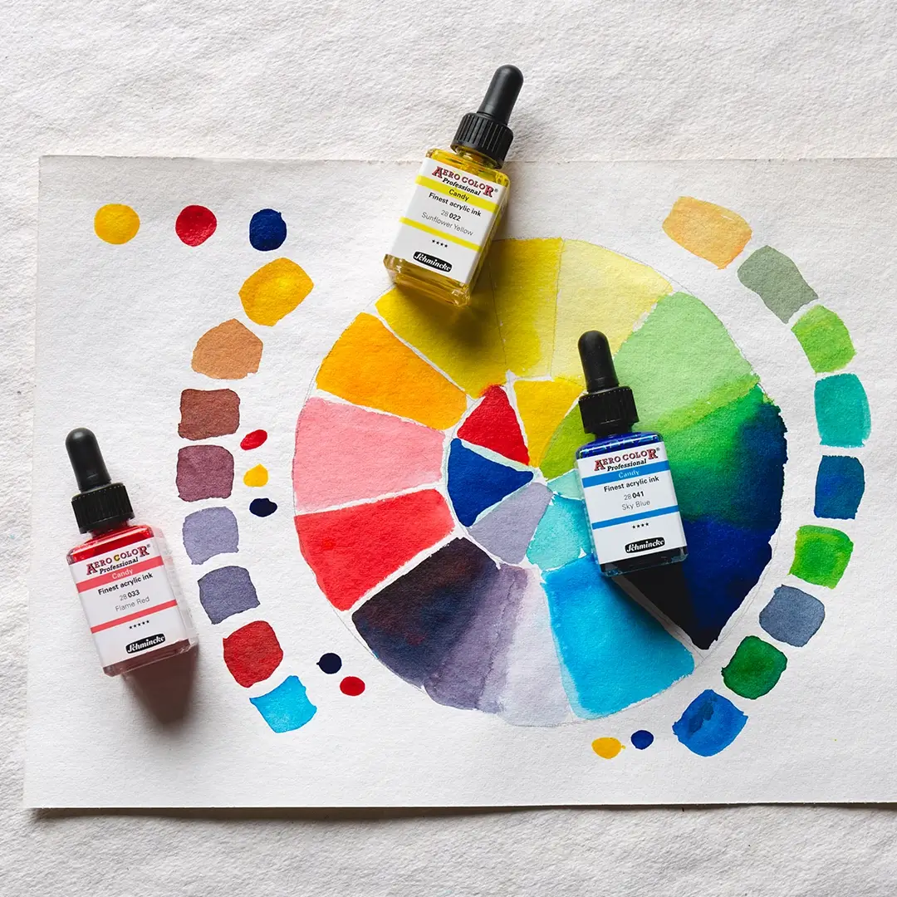
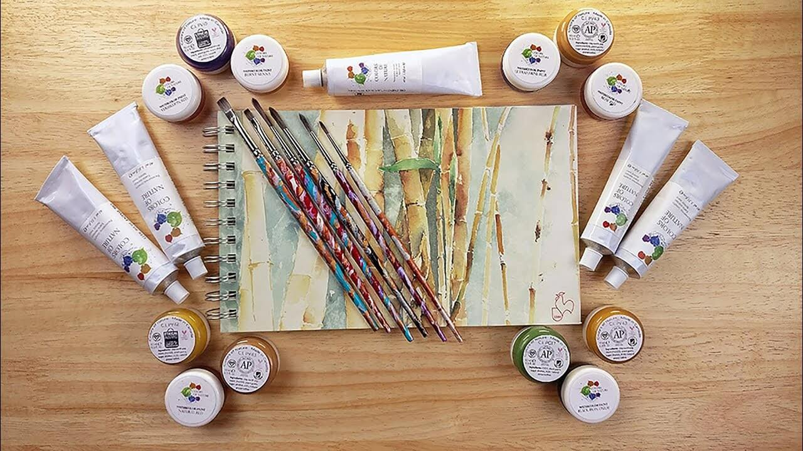
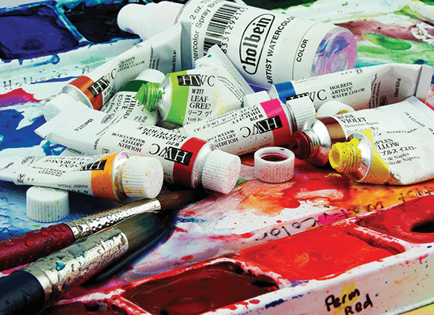
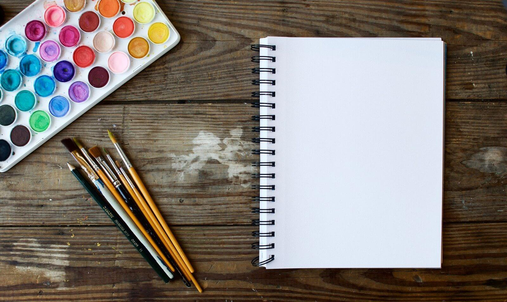
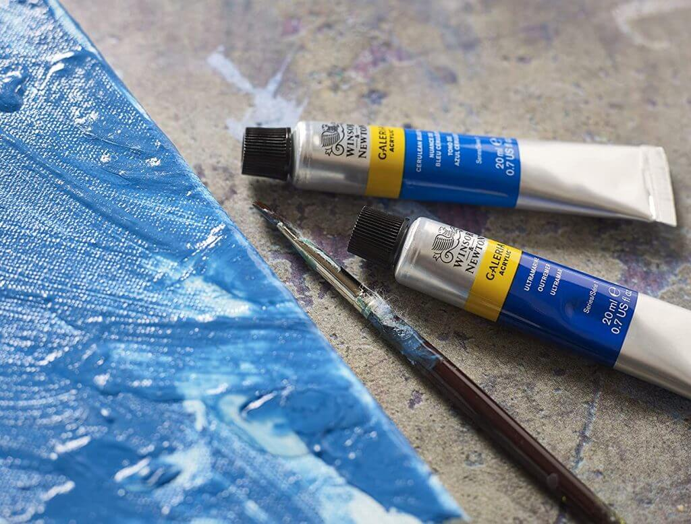

Vegan Art Products
Art supplies that are cruelty-free or without the use of animal products is an important concern for many artists. While some would argue that you simply cannot replicate or replace natural hair or ingredients within certain products, there is a growing need for synthetic brushes or for clarification as to which art materials do not contain animal products.
 Ethical ingredients
The base of all modern paints is mostly synthetic based now, however the issues are the pigments and where they come from. The problem that lots of companies face is producing synthetic colours often cause a lot of harm to the environment. They are trying to find a balance between vegan & cruelty free while also being environmentally friendly.


